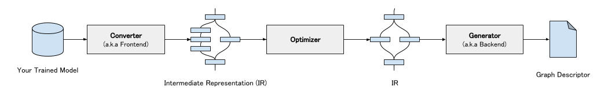
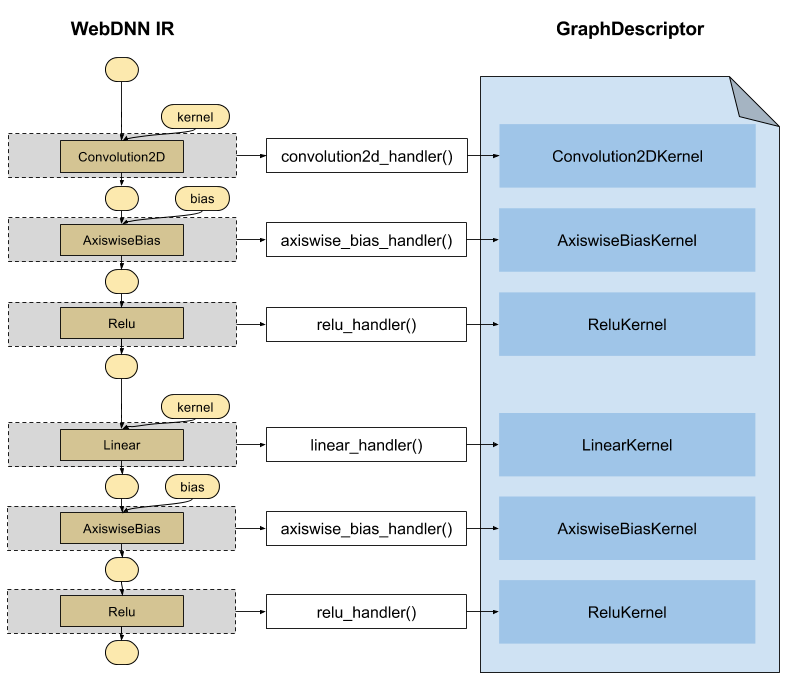
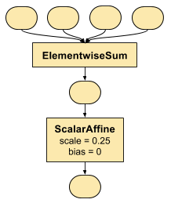

0. Architecture of Graph Transpiler and How to Extend¶
This section describes about overview of WebDNN graph transpiler and how to extend it.
Overview¶
WebDNN graph transpiler is consist of three modules: Model Converter, Optimizer, and Descriptor Generator.
Model Converter (Converter) converts trained model in other frameworks (e.g. keras.models.Model,
chainer.Chain) into WebDNN intermediate representation (IR). Optimizer transform graph to optimize execution speed and model data size.
Descriptor Generator (DescriptorGenerator) converts IR into graph descriptor.
WebDNN IR¶

WebDNN IR consists two type of nodes: Operator and Variable. Operator represents each operation in DNN
model such as convolution, activation, and so on. Variable represents each operator’s inputs and outputs.
Each Variable is referenced from operators with a name. For example, in left figure, two input variables are referenced as
x and w respectively, and output variable is referenced as y.
All WebDNN operators are stateless, and operator doesn’t have any reference to variables without input and output connections. All data required to calculate outputs is given as input variable.
Converter Handler¶
Converter handler is function which convert other framework’s operator (Keras layers, Chainer functions, etc.) into WebDNN IR operators.
In converter handler, not only the operator itself, related variables (kernel and bias in the follow figure) are also converted into
WebDNN IR variables. Many preset converter handlers like conv2d_handler() and dense_handler() are registered to model converter
with corresponding operator type. In model conversion phase, converter traverse model’s computation graph from input to output and when any
operator is found, corresponding converter handler is called.
Generator Handler¶
Similarly to converter handler, generator handler is function which is registered to descriptor generator and convert corresponding WebDNN IR operator into kernel source code.
How to Extend Graph Transpiler¶
There are two choices:
If your custom operator can be constructed with preset WebDNN operators, you have to do is only implementing converter handler from your custom operator to preset WebDNN operators.
For example,
keras.layers.Average, which computes average of inputs elementwisely, can be constructed as right figure (when number of inputs is 4). In this case, bothElementwiseSumandScalarAffineare already supported in generators. Therefore, you have to implement only converter handler.Otherwise, you have to implement both converter handler and generator handler.